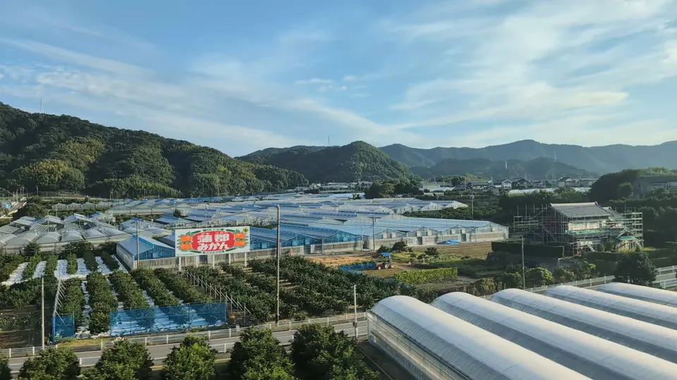

01 / 日常日本
从记忆中的形状开始
这些不是为列车乘客设置的观光景点，而是运作中的农田、工厂、运动设施与宗教标记——日本日常的一部分，从车窗一闪而过时却令人惊喜。

那些鲜绿的行列是什麽？
答案静冈的茶田
茶树被修剪成长长的圆弧形树篱，沿着丘陵起伏排列。春天第一批嫩叶让茶田呈现鲜明的黄绿色，是静冈代表性的风景之一。
再看一眼。 那些风扇呢？茶树上方的螺旋桨是防霜风扇。寒冷的春夜里，它们将上方相对温暖的空气向下吹，保护柔嫩的新芽。

富士山下为什麽有那麽多烟囱？
答案富士市的造纸厂
富士是日本重要的造纸城市之一。工厂利用富士山丰沛的地下水与富士川的工业用水发展起来；你注意到的白色羽状气体，是这片工业风景中的蒸气。
再看一眼。 看过富士山后，继续留意E席一侧。抵达新富士前约一分钟，近景从田野转为烟囱、储槽与管线。

那些长长的银色屋顶是什麽？
答案东三河农业地带的温室
这些在日本常被称为「塑胶温室」的棚屋，带你走入盛产番茄、柑橘、香草与花卉的地区。每栋里的作物看不见，但银色屋顶、灌溉用水与红色柑橘招牌都有故事。
再看一眼。 蒲郡的温室柑橘在春夏上市。爱知其他地区的农民则用灯光调整菊花的开花时间。认识日本食物与花卉背后的工作。

那些巨大的绿网是什麽？
答案高尔夫练习场——日语称为uchippanashi
网子可防止高尔夫球飞入附近住宅与道路。在日本城市里，许多练习场的打击席设在两三层楼上，因此练球的地方看起来像一座巨大笼子。
再看一眼。 这一座在米原与京都之间的E席一侧一闪而过，前方是瓦屋顶，后方是林木覆盖的小山。这种形式并非日本独有，但在这里是常见的都市景象。Uchippanashi（打ちっぱなし）大致意为「一直打球」。

田野中为什麽有一座巨大的红色鸟居？
答案南宫大社的大鸟居
鸟居标示通往神社的入口。这一座距离南宫大社本殿约一公里，横跨道路，在神殿进入视野前就宣告神社参道的开始。
再看一眼。 它高逾21米，在岐阜羽岛与米原之间的A席一侧掠过。周围低矮的农田让红色鸟居显得更加巨大。
02 / 近铁 · 奈良与三重
近铁沿线的宫殿遗址与巨像
这两处风景位於近铁的传统铁路线，并非东海道新干线。请确认下方路线与地点；本网站的新干线时刻及座位指引不适用於此。
 打开 X 视频
打开 X 视频奈良の車窓から。#平城宮跡 #朱雀門 #近鉄
— @fuku_musuko Original post
铁轨外的红门与宫殿？
答案： 平城宫的朱雀门与大极殿
近铁奈良线穿越平城宫遗址。搭乘往近铁奈良方向的列车时，向右看朱雀门，向左远望大极殿。两座建筑都是重建的。铁路於1914年通车，比宫殿遗址被列入世界遗产早得多。
 打开 X 视频
打开 X 视频近鉄榊原温泉口駅から見える、今日のルーブル彫刻美術館。
— @Haatainen Original post
金色观音与巨大的有翼雕像？
答案： 大观音寺与罗浮宫雕刻美术馆
33米高的金色观音属於大观音寺。附近的罗浮宫雕刻美术馆在户外展示巨大的萨莫色雷斯胜利女神与米洛的维纳斯雕像。它们位於近铁大阪线榊原温泉口站附近，从车站也能步行造访。
记得看过727看板吗？
 在727照片与地点索引中找出你看见的看板 →
在727照片与地点索引中找出你看见的看板 →比较照片，再用地图或沿线地点清单找出你看见它的位置。
若想欣赏东海道新干线车窗风景，可选择列车查看预估通过时间，或浏览完整图监，探索城堡、看板、河流等景物。
关於这些风景
我们的照片拍摄於东海道新干线车窗。时间以Nozomi为基准估算，请提早开始留意。独立的近铁章节使用已标示创作者的X原始影片。载入影片会连线至X，也可直接开启原始贴文。近铁风景不包含在新干线时间轴中。